Mechanical Cone Dropper
This is a Mechanical Cone Dropper i helped developed as part of a group project.
Learn moreThese are some of my Modelling and Analysing Projects I have done.
To learn more about different Modelling Techniques and to get a head start on my course I attempted to use MATLAB for some experiments. I’ve always found the idea chaos theory very interesting ever since it first got introduced to me in my Further Maths Class. Pursing this interest, I went onto to model a Double Pendulum in Solidworks with little success. However, I was able to model one in Python using pygame. However i decided to pursue this further over summer using MATLAB skills i had learnt as part of my course. I modelled a double Pendulum and used it to find a solution for theta. I then found a thread on reddit which taught me how i could model an animiation for the dynamic motion. Finally i again attempted to model the pendulum but this time on Inventor and i was more succesful.
Theory:
Abstract:
This experiment investigated the interactions of a free air jet with its surroundings. A pitot-static tube and an inclined manometer was used to make velocity measurements. The pitot static tubes were moved vertically and horizontally for these measurements. The investigation demonstrated successfully how the air would interact by forming three distinct boundaries, the mixing region, the core, and edge. It also confirmed the theory that there would be a negative correlation between the velocity and both the radial and axial displacements. The maximum velocity was calculated to be 17.3 ms^(-1) and the two divergence angles were found to be θ1 = 6° and θ2 = 7°.
Intro:
The objective of this experiment will be to investigate the velocity distribution of a circular air jet from select distances. By the end of this investigation a conclusion will be made on how a uniform jet interacts with its surroundings. Pitot-static tubes are used in scenarios where fluid velocity is measured such as in the front of an aircraft or a racing car. An air jet is a ‘nozzle or tube from which a directed pressurized jet of air is emitted’ (Lexico, 2022). Air jets are used in household appliances such as hair dryers and hand dryers, however, the principal ideas of a simple air jet can be developed and used in more areas such as jet engine propulsions in aviation and space technology. With these measurements more information can be collected to improve the efficiencies
Theory:
The difference between the total pressure p0 and static pressure, p, can be measured by a pitot-static tubes. Using Bernoulli’s principle, the following equation can be derived:
When a pressure difference is applied to an inclined manometer to a vertical height change h, in meters, equilibrium will be established when:
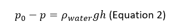The combination of these two equations, assuming ρwater = 1000 𝑘𝑔𝑚−3 and ρair = 1.225 𝑘𝑔𝑚−3, results in the local velocity being:
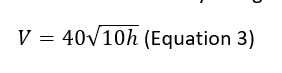The volume flow rate can be calculates using the following equation:
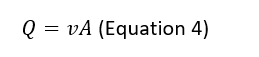Where A is the area and v are the velocity of the air flow. As the area of a circle is πr^2, where r is the radius. Equation 4 now becomes: 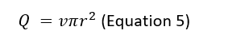
In the cases where the axial distance is greater than the edge of the core, the air velocity is not constant and so to calculate the volumetric flow rate integration is required:
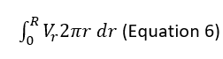Where V_r is the velocity at the radius r, and R is the radius at the edge of the jet. The velocity is asymmetric above and below the centreline and so integration can be reduced to a half annulus:
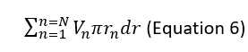Where the radius R is divided into N half-annuli. The velocity at the n’th half-annulus is V_n, and the radius from the centre is r_n. The width of the half annulus, dr, can vary.
Method:
Prepare the manometer so that it is at an angle and record the initial position of the lower end of the meniscus of the fluid. Turn the air jet on and measure the displacement L of the water in the manometer, from the same end of the meniscus, along the centreline at axial displacements of 0, 20, 80, 120, 160, 200, 300, 400 and 500 all measured in mm. The height can then be measured by using the following trigonometric expression:
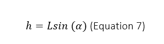Equation 3 can then be used to calculate the velocity along the centre line of the jet. A similar method should be used to measure the velocity of the jet at an axial distance. This time measuring the displacement change as the pitot-static tube is moved along the vertical axis in intervals of 4mm from -28mm to 28mm. Repeat this setup for an axial displacement of x = 6D but at intervals of 5, ranging from -50mm to 50mm. Repeat once more for an axial displacement of x = 10D, ranging from -60mm to 60mm.
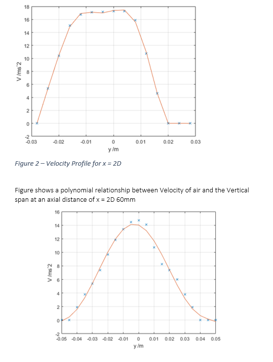 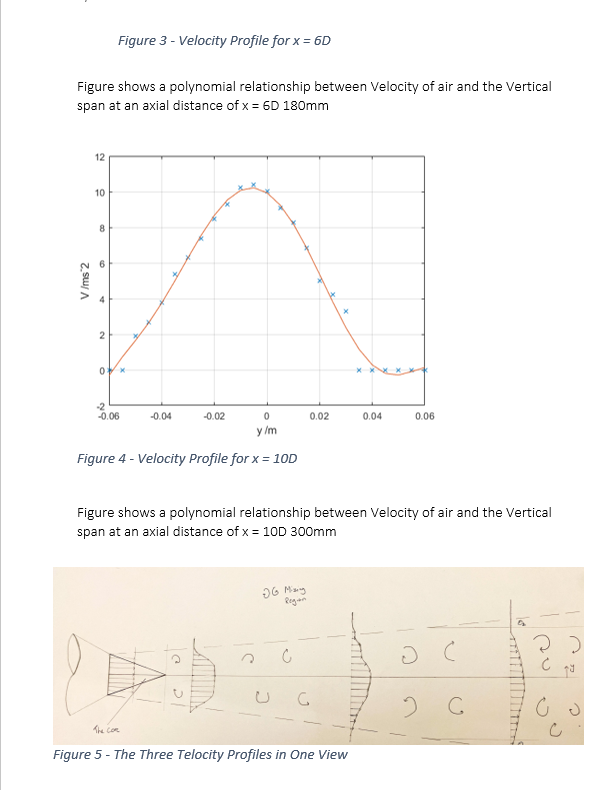 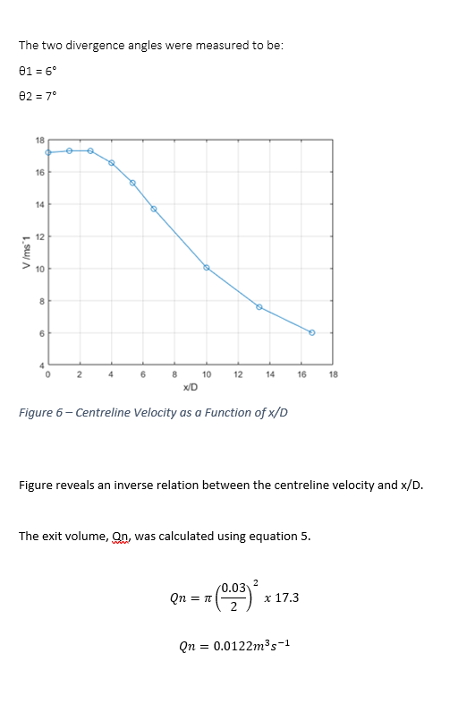 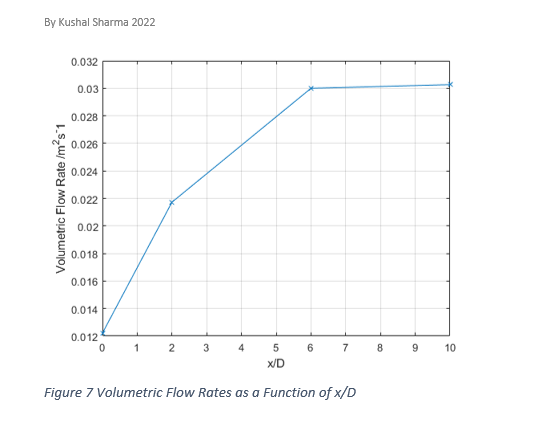Results:
The structure of the air jet consists of three major regions: the edge of the jet, The core, and the mixing region. The edge of the jet is where the velocity falls too zero. The core is the where the velocity of the jet is constant and equal the velocity of the nozzle exit plane. The Mixing region is the velocity if the jet is less than the velocity of the exit plane. As seen from figure 5 the core region ends at 41mm away from the exit nozzle plane. Outside this region the velocity decreases (the mixing region). This is due to the air from the jet interacting with the air molecules from the atmosphere. The different fluid flows colliding molecules causes them to lose their momentum and to the velocity is reduced. Both these regions are contained within the edge of the jet. This is the “boundary” of the jet where the relative local velocity is 0. This increasing at angle known as the divergence angle. As is shown by figure angles are different for the two sides, this will be explained later. From figure 5 it is shown the distribution of the centre line velocities is roughly consistent up to 41mm. Outside the core region, from figure 6 it can be seen the centreline velocity is distribution is inversely related to the displacement from the air jet nozzle. As the air moves away from the nozzle the velocity along the centre line decreases. This is due to the air from the jet colliding with air from the atmosphere. This collision is not elastic, so velocity is reduced due to momentum transfer to the air molecules but also energy is lost during the interaction, so the kinetic energy of the molecules decreases. Figure 7 demonstrates that the volume flow rate increases with axial displacement from 0.0122m^3 s^(-1) at the nozzle to 0.030m^3 s^(-1) at 180mm away from the edge of the nozzle plane. Between 180mm and 300mm there is a sudden change in the gradient and this increase is so small it is almost negligible. The increase in the volumetric flow rate can be explained by the As is shown by figure 5, the velocity and radius of the air jet increases linearly. The air jet forms into the shape of a cone. This is because of the interaction of the different fluid flows. The velocity of the air jet molecules, in the axial positive direction, is much greater than that of the erratically flowing air molecules. The momentum transfer of the air molecules is in random direction but due to the direction of the air jet molecules being in the positive direction, this randomness overall becomes distributed into the shape of a cone. As can also be seen by figure 5, the air jet has 2 divergent angles. This can be explained by the grounding effect. Below the air jet is the surface of the table. The air molecules from the jet were able to then collide with the table surface whereas this was not the case on the top side. This disturbance caused the velocity distribution radially on the bottom side to be different and so the figure 5 is not symmetrical. This explains why there are two divergence angles. One source of error could be due to the uncertainty of the measurement from the manometer’s ruler. Because the increments of the tube are at 1mm the uncertainty become ±0.5mm. But due to having to measurement for the initial position and the final position of the meniscus the overall uncertainty become ±1mm. The grounding effect would cause an uncertainty in the velocity distribution in both the axial and radial direction. This would affect both the centreline velocity distribution and the volumetric flow rates.
Conclusion
Conclusion In conclusion, the experiment successfully demonstrated how a free air jet interacts with its surroundings and the effects of changing the radial and axial displacement has on the velocity distribution profile and the centreline velocity. The edge of the core region was calculated to be 23mm from the exit plane of the air jet. The maximum velocity was calculated to be 17.3 ms^(-1). The were two divergence angles, 謬1 = 6° and 謬2 = 7°. This calculated data was useful to develop a velocity profile which showed clearly the three boundary layers, the core region, the mixing region, and the edge of the air jet.
This is a Mechanical Cone Dropper i helped developed as part of a group project.
Learn more
My projects include a basic Tesla Valve and more recently a Mechanical Cone Placer.
Learn more